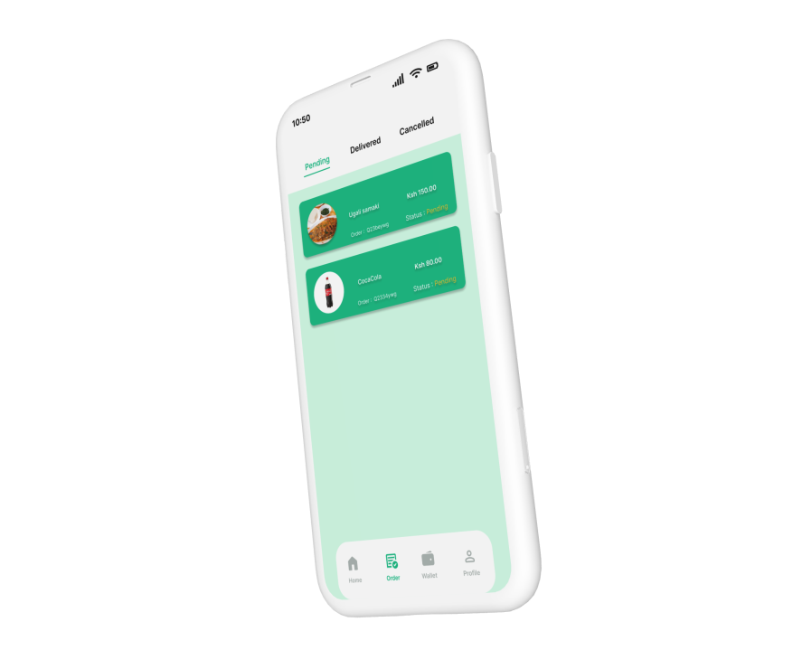

Afrimeals UX Case Study
Authentic African meals delivered with love
Afrimeals connects the African diaspora and food lovers with local chefs specializing in traditional cuisine like jollof rice, ugali, chapati, and more.
My Role: Lead UX Designer (Research, Wireframing, Prototyping, Testing)
Duration: 6 months
